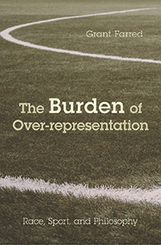

<body bgcolor="#FFFFFF" text="#000000" link="#0000FF" vlink="#CC0000" alink="#CC0000"><center><hr width="350" size="1" align="center" noshade>Probing the cultural and philosophical forces at play in three under-regarded moments in sports history<hr width="350" size="1" align="center" noshade><p><a href="https://cdcshoppingcart.uchicago.edu/Cart/ChicagoBook.aspx?ISBN=&&PRESS=temple" target="_top">Buy this book!</a> | <a href="https://cdcshoppingcart.uchicago.edu/Cart/Cart.aspx?PRESS=temple" target="_top">View Cart</a> | <a href="https://cdcshoppingcart.uchicago.edu/Cart/Cart.aspx?PRESS=temple" target="_top">Check Out</a></p><p></p></center><!--none//--><h1 class = "booktitle">The Burden of Over-representation</h1> <h1 class = "subtitle">Race, Sport, and Philosophy</h1>
<h3>Grant Farred </h3>
paper: $34.95, Jul 18<BR>EAN:&nbsp;978-1-4399-1143-3<BR><font color=#990033>Not Yet Published Preorder</FONT><font size=-7><br>&nbsp;</font></p><p class="info">cloth: $99.50, Jul 18<BR>EAN:&nbsp;978-1-4399-1142-6<BR><font color=#990033>Not Yet Published Preorder</FONT><font size=-7><br>&nbsp;</font></p><p class="info">e-book: $34.95, Jul 18<BR>EAN:&nbsp;978-1-4399-1144-0<BR><font color=#990033>Not Yet Published Preorder</FONT><font size=-7><br>&nbsp;</font></p></p></td></tr></table>
<BR> <p class="info">258 pp<BR> 6 x 9<BR> 3 halftones <p class="info"><font size=-7>&nbsp;</font></p><p class="info">
</P><BLOCKQUOTE></BLOCKQUOTE>
<p><i>The Burden of Over-representation </i>artfully explores three curious racial moments in sport: Jackie Robinson's expletive at a Dodgers spring training game; the transformation of a formality into an event at the end of the 1995 rugby World Cup in South Africa; and a spectral moment at the 2010 FIFA World Cup. Grant Farred examines the connotations at play in these moments through the lenses of race, politics, memory, inheritance and conciliation, deploying a surprising cast of figures in Western thought, ranging from Jacques Derrida and Friedrich Nietzsche to Judith Butler, William Shakespeare, and Jesus-the-Christ. Farred makes connection and creates meaning through the forces at play and the representational burdens of team, country and race.Farred considers Robinson's profane comments at black Dodgers fans, a post-match exchange of "thank yous" on the rugby pitch between white South African captain Fran&ccedil;ois Pienaar and Nelson Mandela, and being "haunted" by the ghost of Derrida on the occasion of the first FIFA World Cup on African soil. In doing so, <i>The Burden of Over-representation </i>provides a passionate, insightful analysis of the social, political, racial, and cultural consequences of conciliation at key sporting events.<br>
<P CLASS="top"><A HREF="#top">BACK TO TOP</A></P>&nbsp;
<BR>&nbsp;
&nbsp;<P>
</P><BR>&nbsp;
<H2 class="inpageheading"><A NAME="author bio"></a>About the Author(s)</H2><p><b>Grant Farred</b> is a Professor of Africana Studies at Cornell University. His most recent books include <i>Long Distance Love: A Passion for Football</i> (Temple), <i>Martin Heidegger Saved My Life,</i> and <i>In Motion, At Rest: The Event of the Athletic Body.</i><br>
<P CLASS="top"><A HREF="#top">BACK TO TOP</A></P>
<p><h2 class="inpageheading"><a name="subjects"></a>Subject Categories</h2> <p><a href="http://www.temple.edu/tempress/sports.html" target="_top">Sports</a> <br><a href="http://www.temple.edu/tempress/american.html" target="_top">American Studies</a> <br><a href="http://www.temple.edu/tempress/cultural.html" target="_top">Cultural Studies</a> <br><a href="http://www.temple.edu/tempress/philosophy.html" target="_top">Philosophy and Ethics</a> <br><a href="" target="_top"></a> </p>
</p>
<P>
</P>
<p align="center"><a href="https://cdcshoppingcart.uchicago.edu/Cart/ChicagoBook.aspx?ISBN=&&PRESS=temple" target="_top">Buy this book!</a> | <a href="https://cdcshoppingcart.uchicago.edu/Cart/Cart.aspx?PRESS=temple" target="_top">View Cart</a> | <a href="https://cdcshoppingcart.uchicago.edu/Cart/Cart.aspx?PRESS=temple" target="_top">Check Out</a></p><p><font face="Arial" size="1"><a href="copyright.html" onMouseOver="window.status='Web Copyright Policy';return true;" onMouseOut="window.status=''" title="Web Copyright Policy">&copy;</a> 2018 <a href="http://www.temple.edu" target="new" onMouseOver="window.status='Link to Temple University home page';return true;" onMouseOut="window.status=''" title="Link to Temple University home page">Temple University</a>. All Rights Reserved. http://www.temple.edu/tempress/titles/2324_reg.html</font></p>